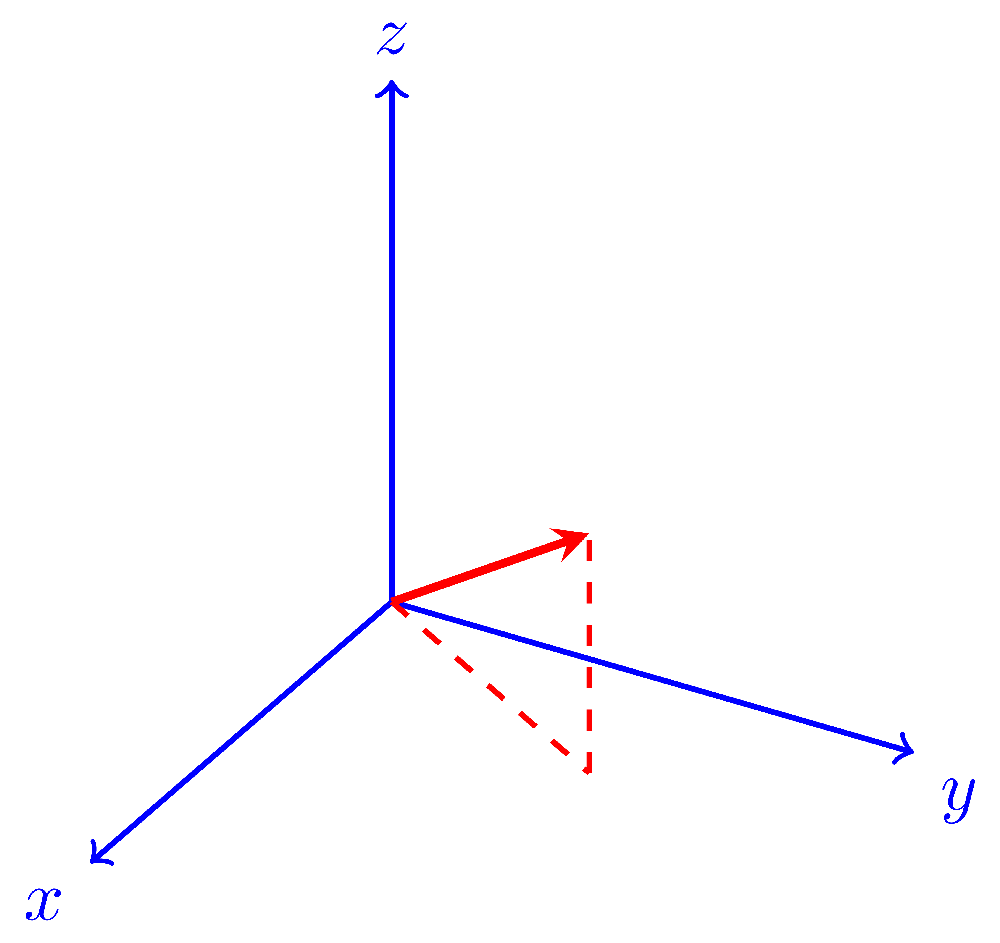

[main]Notes on TeXmacs
[main]Notes on TeXmacs
 [main]Notes on TeXmacs
[main]Notes on TeXmacs
The
You may insert a
Type help, you will get all the available graph backends.
Generate graphs with your favorite tools in GNU TeXmacs
Created by Darcy Shen, Implemented in Python, asy[421ms] by
default
Welcome to star and fork it at https://github.com/texmacs/plugins
asy]
pdflatex
TeXmacs interface to PDFLaTeX for picture generation
pdflatex]
\documentclass[tikz]{standalone}
\usepackage{tikz-3dplot}
\begin{document}
\tdplotsetmaincoords{60}{120}
\begin{tikzpicture}[scale=3,tdplot_main_coords,axis/.style={->,blue,thick},
vector/.style={-stealth,red,very thick},vector
guide/.style={dashed,red,thick}]
%standard tikz coordinate definition using x, y, z coords
\coordinate (O) at (0,0,0);
%tikz-3dplot coordinate definition using r, theta, phi coords
\tdplotsetcoord{P}{.8}{55}{60}
%draw axes
\draw[axis] (0,0,0) – (1,0,0) node[anchor=north
east]{$x$};
\draw[axis] (0,0,0) – (0,1,0) node[anchor=north
west]{$y$};
\draw[axis] (0,0,0) – (0,0,1) node[anchor=south]{$z$};
%draw a vector from O to P
\draw[vector] (O) – (P);
%draw guide lines to components
\draw[vector guide] (O) – (Pxy);
\draw[vector guide] (Pxy) – (P);
\end{tikzpicture}
\end{document}

pdflatex]